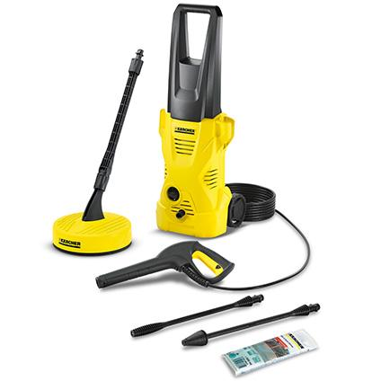

De Kärcher hogedrukreiniger K2 Home is uitgerust met een spuitpistool, twee lichtlopende wielen, een 4 meter lange hogedrukslang, een spuitlans, een vuilfrees met roterende puntstraal voor de verwijdering van hardnekkige vervuiling en een waterfilter voor de bescherming van de pomp. De extra Home Kit garandeert een spatvrije reiniging van grote oppervlakken rondom het huis en omvat de T50 oppervlaktereiniger en het reinigingsmiddel Patio & Deck in een 500ml opvouwbare verpakking. Deze hogedrukreiniger is ideaal voor de verwijdering van normale vervuiling en voor een occasioneel gebruik rondom het huis van onder meer fietsen, tuingereedschap en tuinmeubelen.
| # |
|---|